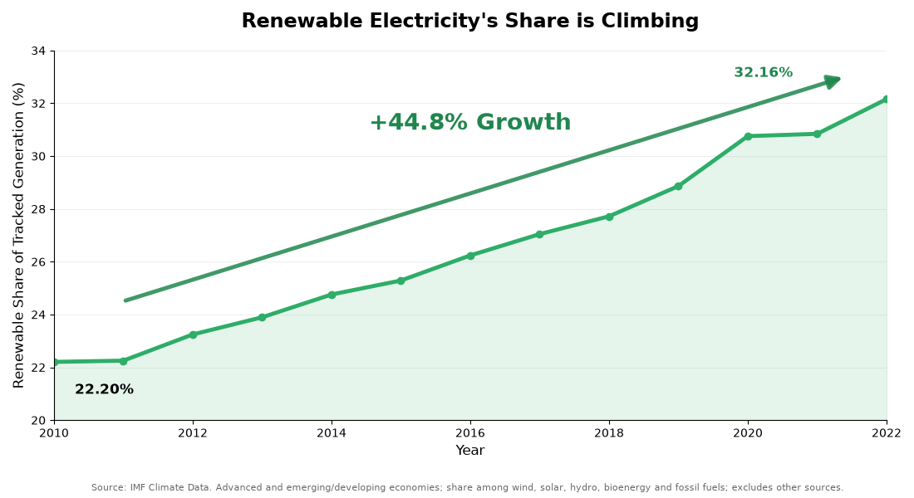
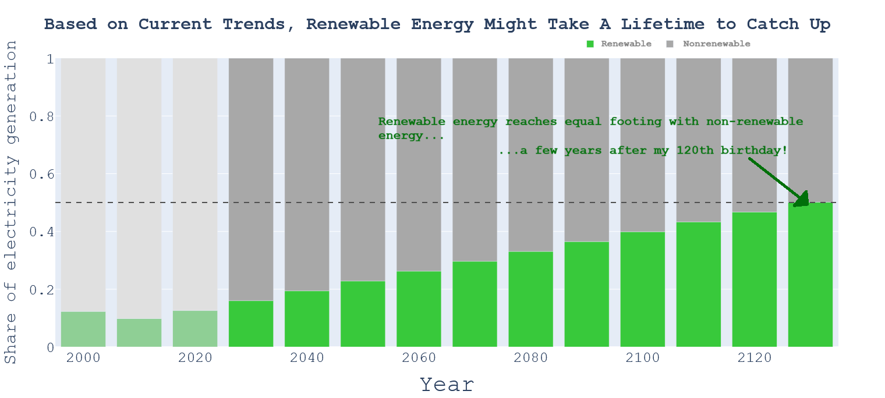

Proposition: Renewable Energy has gained traction incredibly quickly
FOR the Proposition

Design Decisions and Rationale:
- Truncated Y-Axis (-1)
- We decided to have the y-axis start at 20% which makes the increase in renewable electricity’s share seem like a more steep incline, as it seems like we are starting from the bottom and rapidly climbing. The values are accurate, but the perception changes to try to make the viewer think that renewable energy is transitioning more rapidly
- Relative Growth Annotation (-1)
- We highlighted 44.8% relative increase because it seems like a larger number comparative to the actual 10% point increase. Seeing a bigger number makes the growth appear to be more substantial, which furthers our argument that renewable energy is progressing quickly.
- Renewable Energy Share Calculation (+1)
- We got our stat by aggregating wind, solar, hydro, and bioenergy generation from the groupings given, and dividing their combined output by the combination + fossil-fuel generation. It doesn’t contain all other sources, but just goes to show the growing importance and attempt at taking over fossil fuels.
- Green coloring and upward directional arrow (-0.5)
- The green coloring is meant to show progress (as green is represented with good), as well as just environmental progress in general, as green is represented with environmental things too. The upward arrow is trying to emphasize that the graph is trending upwards.
- Positive title (-1)
- The graph can be interpreted as showing the fact that fossil fuels do still dominate the share of electricity, but our title and emphasis on the graph emphasized the pattern that renewable energy is growing, making the transition feel more successful and in reach to taking over from fossil fuels.
AGAINST the Proposition

Design Decisions and Rationale:
- Data extrapolation (-2)
- The projected growth in renewable energy was calculated by taking the mean between the last two years, 2021-2022. This method of projection assumes that the growth will remain constant for the entire ~100 growth period, which is not accurate as technology will advance over time. Because this was meant to completely deceive the reader, it earns a -2 score. This choice makes the graph more persuasive since it seems like it will take much longer than it actually will for renewable energy to grow. Because of how fundamental this decision was, it went well with relatively little downsides. The other alternatives were different methods of projection; this method was the best at underrepresenting growth without making extreme assumptions like renewable energy declining or other similar ideas.
- Color coding projection (-1)
- The projected years were made brighter than the actual numbers, and since they take up more space on the graph it makes it seem like they are the real measured values. This adds a sense of credibility and makes the visualization more persuasive. Since the color coding also helps the reader see the split between projected and not projected, this isn't entirely deceptive and thus earns a -1.
- Annotations (+1)
- The annotation gives a concrete idea of how long it will take based on the projected numbers. This makes it a lot clearer that renewable energy isn't advancing quickly at this pace, as most people would not live to their 120th birthday. The annotation is not necessarily deceptive, but it is based on misleading projections. This is why it earns a +1 score.
- Energy proportion (-1.5)
- By using the share of total energy produced via renewable means, the actual amount of energy is obscured. Even if renewable energy is producing a lot of usable energy, comparing it to the total amount of energy produced makes it seem less significant. This further drives the point that renewable energy is too slow. Since this is meant to make renewable energy seem bad but isn't completely targeted, it is rated at -1.5. Other alternatives include changing the scale or truncating the y-axis, as these could both be used to make renewable energy seem worse. However, they would both be quite obvious. Using proportions affects the data itself, not the actual visualization, making it harder to detect.
Final Reflection
Over the course of creating these visualizations, we were surprised by how much the design choices could influence how viewers interpret the same data, especially when it came to making future projections about said data. Every design choice can be deceptive and influential on the viewing experience, pushing people towards certain takeaways defined by the creator of the visualizations.
We now define ethical visualization as presenting data clearly and accurately while using design choices to support an argument without hiding important information or misleading the audience. Similarly, ethical analysis should be identifying themes and patterns in the data that are actually present, not just cherrypicking patterns for an ulterior motive. Persuasive choices are acceptable as long as the data is represented honestly and assumptions like the estimated crossover year being made clear to the viewers.
Getting each of these key design choices from our graphs to display the information exactly the way we wanted to was quite difficult. It was not straightforward trying to pick out what design elements we wanted in our graphic design, as they each had consequences as to how the overall design would portray the data. The boundary between “acceptable” and “misleading” is very thin, as there are numerous things that can be taken away from a visual representation, and our design choices are trying to push the viewer towards one certain takeaway from the dataset. In some ways, this can be interpreted as concealing the other interpretations that disagree with the one that we are pushing with our design choices, or it could be merely seen as a suggestion or a possible explanation for what data truly represents. We found that manipulating the data in ways that helped our case could be classified as “misleading”, and that design elements that weren’t directly towards pushing an agenda could be classified as “acceptable”, but there is a lot of gray area in between.